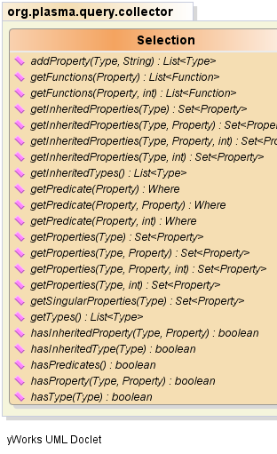
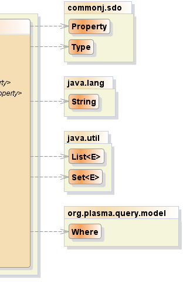

public interface Selection
Select,
Type,
Property|  |  |
| Modifier and Type | Method and Description |
|---|---|
java.util.List<commonj.sdo.Type> |
addProperty(commonj.sdo.Type rootType,
java.lang.String path)
Adds the given given property to the selection for the given graph root
type and returns any types collected during traversal of the property path.
|
java.util.List<Function> |
getFunctions(commonj.sdo.Property property)
Returns the functions for the given property or empty list if the given
property has no functions.
|
java.util.List<Function> |
getFunctions(commonj.sdo.Property property,
int level)
Returns the functions for the given property for the given traversal level
or graph depth, or empty list if the given property has no functions.
|
java.util.Set<commonj.sdo.Property> |
getInheritedProperties(commonj.sdo.Type type)
Returns the unique set of inherited data and reference properties collected
for the given type, and any base types of the given type, irrespective of
the (query) graph level. of the given type
|
java.util.Set<commonj.sdo.Property> |
getInheritedProperties(commonj.sdo.Type type,
int level)
Returns the unique set of inherited data and reference properties collected
for the given type, and any base types of the given type, for the given
(query) graph level.
|
java.util.Set<commonj.sdo.Property> |
getInheritedProperties(commonj.sdo.Type type,
commonj.sdo.Property sourceProperty)
Returns the unique set of inherited data and reference properties collected
for the given Type for the given (query) graph edge source property.
|
java.util.Set<commonj.sdo.Property> |
getInheritedProperties(commonj.sdo.Type type,
commonj.sdo.Property sourceProperty,
int level)
Returns the unique set of inherited data and reference properties collected
for the given Type for the given (query) graph edge source property at the
given traversal level or graph depth.
|
java.util.List<commonj.sdo.Type> |
getInheritedTypes()
Returns all selected types and as well as types which specialize or inherit
from the selected types.
|
Where |
getPredicate(commonj.sdo.Property property)
Returns the predicate for the given property or null if the given property
has no predicates.
|
Where |
getPredicate(commonj.sdo.Property property,
int level)
Returns the predicate , if exists, collected for the given property for the
given traversal level or graph depth.
|
Where |
getPredicate(commonj.sdo.Property property,
commonj.sdo.Property sourceProperty)
Returns the predicate, if exists, collected for the given property and for
the given (query) graph edge source property.
|
java.util.Set<commonj.sdo.Property> |
getProperties(commonj.sdo.Type type)
Returns the unique set of data and reference properties collected for the
given type irrespective of the (query) graph level, or source graph edge
type.
|
java.util.Set<commonj.sdo.Property> |
getProperties(commonj.sdo.Type type,
int level)
Returns the unique set of data and reference properties collected for the
given Type for the given (query) graph level.
|
java.util.Set<commonj.sdo.Property> |
getProperties(commonj.sdo.Type type,
commonj.sdo.Property sourceProperty)
Returns the unique set of data and reference properties collected for the
given Type for the given (query) graph edge source property.
|
java.util.Set<commonj.sdo.Property> |
getProperties(commonj.sdo.Type type,
commonj.sdo.Property sourceProperty,
int level)
Returns the unique set of data and reference properties collected for the
given Type for the given (query) graph edge source property at the given
traversal level or graph depth.
|
java.util.Set<commonj.sdo.Property> |
getSingularProperties(commonj.sdo.Type type)
Returns the unique set of singular data and reference properties collected
for the given type irrespective of the (query) graph level, or source graph
edge type.
|
java.util.List<commonj.sdo.Type> |
getTypes()
Returns all selected types.
|
boolean |
hasInheritedProperty(commonj.sdo.Type type,
commonj.sdo.Property property)
Returns true if the given type is found in the inherited type selection and
if the given property is found in the property selection for the given
type.
|
boolean |
hasInheritedType(commonj.sdo.Type type)
Returns true if the given type is found in the inherited type selection.
|
boolean |
hasPredicates()
Returns true if the selection has path predicates.
|
boolean |
hasProperty(commonj.sdo.Type type,
commonj.sdo.Property property)
Returns true if the given type is found in the type selection and if the
given property is found in the property selection for the given type.
|
boolean |
hasType(commonj.sdo.Type type)
Returns true if the given type is found in the type selection.
|
java.util.List<commonj.sdo.Type> getTypes()
boolean hasType(commonj.sdo.Type type)
type - the typejava.util.List<commonj.sdo.Type> getInheritedTypes()
boolean hasInheritedType(commonj.sdo.Type type)
type - the typeboolean hasProperty(commonj.sdo.Type type,
commonj.sdo.Property property)
type - the typeproperty - the propertyboolean hasInheritedProperty(commonj.sdo.Type type,
commonj.sdo.Property property)
type - the typeproperty - the propertyjava.util.List<commonj.sdo.Type> addProperty(commonj.sdo.Type rootType,
java.lang.String path)
rootType - the graph root typepath - the SDO XPath specifying a path from the given root type to a
target or endpoint propertyjava.util.Set<commonj.sdo.Property> getProperties(commonj.sdo.Type type)
type - the typejava.util.Set<commonj.sdo.Property> getSingularProperties(commonj.sdo.Type type)
type - the typejava.util.Set<commonj.sdo.Property> getInheritedProperties(commonj.sdo.Type type)
type - the typejava.util.Set<commonj.sdo.Property> getInheritedProperties(commonj.sdo.Type type,
int level)
type - the typelevel - the specific graph level where the properties were specified in
the selectionjava.util.Set<commonj.sdo.Property> getInheritedProperties(commonj.sdo.Type type,
commonj.sdo.Property sourceProperty)
type - the type (query) graph edge source propertysourceProperty - thelevel - the specific graph level where the properties were specified in
the selectionjava.util.Set<commonj.sdo.Property> getInheritedProperties(commonj.sdo.Type type,
commonj.sdo.Property sourceProperty,
int level)
type - the type (query) graph edge source propertysourceProperty - thelevel - the traversal level or graph depthjava.util.Set<commonj.sdo.Property> getProperties(commonj.sdo.Type type,
int level)
type - the typelevel - the specific graph level where the properties were specified in
the selectionjava.util.Set<commonj.sdo.Property> getProperties(commonj.sdo.Type type,
commonj.sdo.Property sourceProperty)
type - the type (query) graph edge source propertysourceProperty - the (query) graph edge source propertyjava.util.Set<commonj.sdo.Property> getProperties(commonj.sdo.Type type,
commonj.sdo.Property sourceProperty,
int level)
type - the type (query) graph edge source propertysourceProperty - the (query) graph edge source propertylevel - the traversal level or graph depthboolean hasPredicates()
Where getPredicate(commonj.sdo.Property property)
property - the propertyWhere getPredicate(commonj.sdo.Property property, commonj.sdo.Property sourceProperty)
property - the source propertysourceProperty - the (query) graph edge source propertyWhere getPredicate(commonj.sdo.Property property, int level)
type - the type (query) graph edge source propertysourceProperty - thelevel - the traversal level or graph depthjava.util.List<Function> getFunctions(commonj.sdo.Property property)
property - the propertyjava.util.List<Function> getFunctions(commonj.sdo.Property property, int level)
property - the propertylevel - the traversal level or graph depthPlasmaSDO™ and PlasmaQuery™ are trademarks of TerraMeta Software, Inc. Copyright © 2011 - All Rights Reserved.